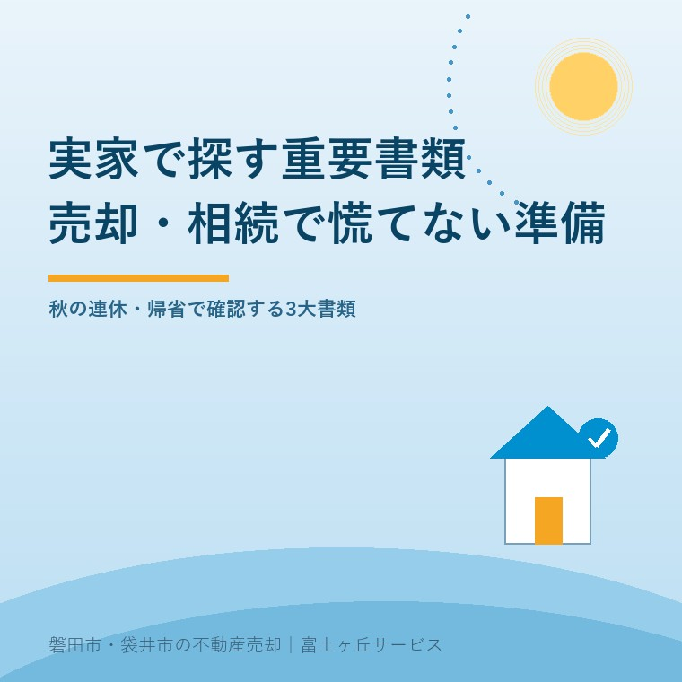

秋の連休に実家で探す重要書類｜不動産売却・相続登記で慌てない準備
2026年9月19日｜カテゴリ：相続・書類準備

この記事の要点
Q. 連休で実家に帰省します。将来の売却や相続登記のために探しておくべき書類は何ですか？
実家に帰省した際は、『権利証（登記済証・登記識別情報）』『固定資産税の納税通知書（課税明細書）』『建築確認済証・図面』の3点を優先して探します。これらが手元にあるだけで、売却査定のスピードと精度が格段に上がり、2024年から義務化された相続登記の手続き費用も抑えられます。磐田・袋井・森町の実家じまいは富士ヶ丘サービスへご相談ください。
秋の連休や彼岸の時期、実家へ帰省した際に「この家を将来どうするか」をご家族で話し合う機会が増えています。しかし、口頭で「そろそろ売却しようか」「名義を誰に変えようか」と議論しても、具体的な物件情報が分からなければ話は一歩も前に進みません。
大石浩之（磐田市／不動産業）です。宅地建物取引士として日々、相続や空き家売却の現場に立ち会っています。「実家を売りたいけれど、親がどこに書類をしまったのか全く分からない」「遺品整理で古い権利証まで捨ててしまいそうになった」という切実なご相談を頻繁に受けます。実は、実家がまだ整っている帰省のタイミングこそ、必要な重要書類を落ち着いて探し出せる最大の好機です。
前回の記事秋彼岸の空き家見守りと草刈り・境界確認では敷地内外の物理的なチェックを解説しましたが、今回は法律・手続きの面から絶対に確保しておきたい「実家の3大重要書類」を実務家の本音で整理します。
実家の押し入れ・金庫で探すべき3大重要書類
不動産の売却査定や相続登記をスムーズに進めるために、現地で探し出して手元にまとめておきたい書類は以下の3点です。
| 書類の名称 | 保管されやすい場所 | 実務上の重要性と役割 |
|---|---|---|
| 権利証（登記済証・登記識別情報） | 仏壇の引き出し、タンスの奥、耐火金庫 | 所有者本人であることを法的に証明する最重要書類。売却時の所有権移転登記に必須。 |
| 固定資産税の納税通知書（課税明細書） | 春先（4〜5月）に届いた郵便物の束 | 土地の地番・地積・評価額、建物の家屋番号が一覧化されており、即座に精緻な査定が可能。 |
| 建築確認済証・検査済証・設計図面 | 新築時やリフォーム時のファイル、契約書袋 | 建物の適法性（建ぺい率・容積率）を証明。買主の住宅ローン審査やリフォーム計画に不可欠。 |
特に重要なのが、毎年春（4月〜5月頃）に磐田市役所や袋井市役所から届く「固定資産税・都市計画税の納税通知書」です。封筒の中に同封されている「課税明細書」には、私道負担の有無や未登記の付属建物の有無まで詳細に記載されています。これさえあれば、市役所へ名寄帳を取りに行かなくても、不動産会社はその場で正確な物件調査を開始できます。
権利証が見当たらない場合でも焦る必要はない
「実家をくまなく探したけれど、古い権利証が見つからない」という場合でも、絶望する必要はありません。権利証（登記済証）は再発行されない書類ですが、紛失していても不動産の売却や相続登記は法的に可能です。
登記手続きを担当する司法書士が売主本人と面談して本人確認を行う「本人確認情報の作成制度」や、法務局からの書面送付による「事前通知制度」を利用することで、適法に買主へ名義を変更できます。
ただし、司法書士への本人確認情報作成には別途数万円の手数料が発生します。余計な出費と日数を抑えるためにも、親御さんが元気なうちに「不動産の権利証はどこにある？」と確認し、所在を確かめておく価値は極めて大きいと言えます。
図面や地積測量図が売却価格と成約スピードを左右する
土地や建物の売却において、買主（特にマイホームを探している子育て世帯）が最も気にするのは「安心して住める状態か」「将来増改築や建替えができるか」という点です。
建築当時の設計図面や建築確認済証が残っている物件は、建物の構造や配管ルートが明確なため、買主側でリフォームの見積もりが立てやすく、購入の決断が格段に早くなります。また、敷地の「地積測量図」や近隣との「境界確認書」が残っていれば、高額な境界確定測量を省略して売却できる場合もあり、数百万円単位のコストや時間の節約につながります。
実務家・宅建士の大石の視点：片付けより先に「書類の保全」
ここからは日頃から不動産仲介と介護事業を両輪で営む私の本音です。実家の売却を考えたとき、多くの方が「まず家財道具を処分して部屋を片付けよう」と焦って不用品回収業者を呼んでしまいます。
しかし、これは順番が逆です。家財を処分する前に、まず重要な権利書や図面、納税通知書を確実に救出してください。回収業者のトラックに重要書類が紛れ込んで捨てられてしまい、後から権利関係の調査に膨大な手間と費用がかかってしまった失敗事例を私は何度も見てきました。
私たち富士ヶ丘サービスでは、介護施設の運営を通じて培った家族の想いに寄り添う目線で、実家じまい・空き家相談をお受けしています。荷物が散らかったままでも、書類の探索から現地査定まで専門スタッフが丁寧にお手伝いいたします。
今日できる3つの確認手順
秋の連休の実家帰省に合わせて、今日ご家族ができる具体的な行動は以下の3ステップです。
- 実家の茶の間で、今年度届いた「固定資産税の課税明細書」を探し、スマートフォンで写真を撮る。
- タンスや金庫を確認し、土地・建物の「権利証（または登記識別情報通知）」の保管場所を確認する。
- 新築時や増築時のファイルがあれば、中身（確認済証や間取り図面）の有無を確かめて一箇所にまとめる。
書類が手元に揃っていれば、今後の売却・賃貸・相続手続きのあらゆる選択肢を落ち着いて検討できます。
よくあるご質問
- Q. 権利証（登記済証）が見当たらない場合、売却は不可能ですか？
- A. 権利証を紛失していても売却は可能です。司法書士による『本人確認情報作成』や法務局の事前通知制度を利用することで安全に所有権移転登記を行えます。ただし追加の手数料や手続き日数がかかるため、帰省時にできる限り探しておくのが賢明です。
- Q. 固定資産税の納税通知書はなぜ売却査定で重要なのですか？
- A. 納税通知書に添付されている『課税明細書』には、土地の地番・地目・地積や建物の延床面積、固定資産税評価額が正確に記載されているためです。登記簿を取り寄せる前でも迅速かつ精度の高い査定価格を算出できます。
- Q. 建築時の図面や建築確認済証がないと建物の価値は下がりますか？
- A. 確認済証や検査済証、設計図面があると、買主がリフォームや増改築の計画を立てやすく、住宅ローンの適合証明も取得しやすいため有利に売却できます。図面がない場合でも現況測量や建物状況調査（インスペクション）でカバーできます。

大石浩之（宅地建物取引士／磐田市在住）
磐田市見付で富士ヶ丘サービス株式会社を経営。高齢者介護事業と不動産業の実務に携わり、実家じまい・空き家管理・相続不動産の売却相談を親身にお受けしています。プロフィール詳細
参考公表資料（2026年9月確認）
※本記事は2026年9月19日現在の法令および実務慣行に基づき執筆しています。個別の登記手続きや税務相談については提携の司法書士・税理士と連携して対応いたします。